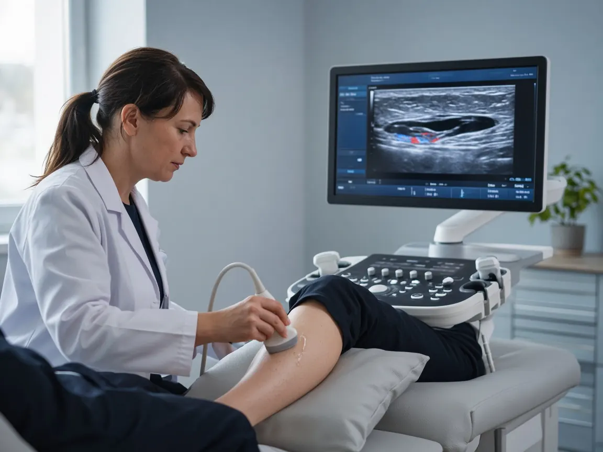
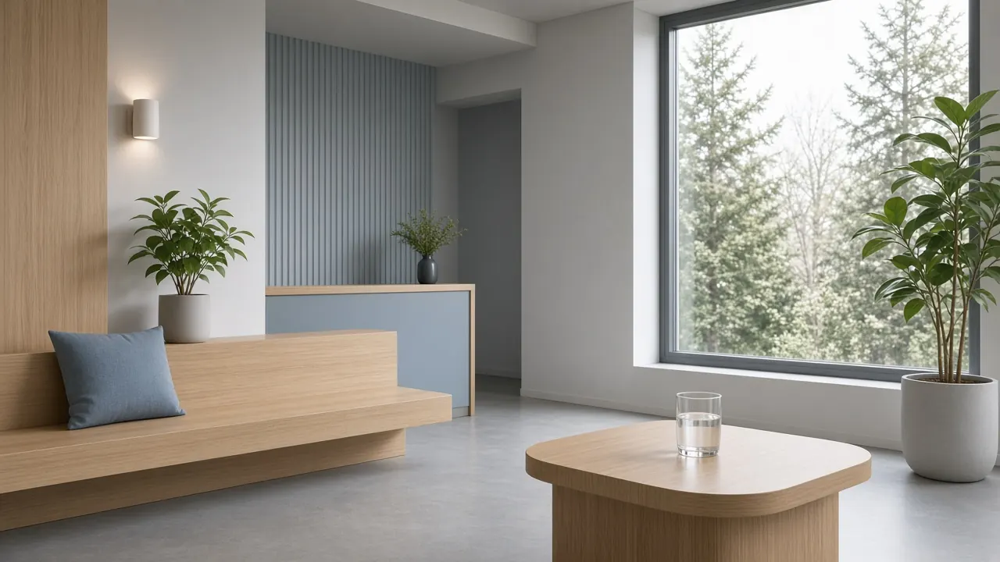

Андрей Викторович Соколов
Сердечно-сосудистый хирург, флеболог, главный врач
- 21 год
- в сосудистой хирургии
- 3 400+
- операций на венах
Ведёт приём сам и оперирует. Если операция не нужна, говорит об этом на первом же приёме и объясняет почему.
Флебология в Северогорске, ул. Береговая, 12
Приём с УЗИ вен — 2 900 ₽, без доплат
Перезвоним за 15 минут и подберём время
Так вены дают о себе знать задолго до того, как станут заметны. Каждый из этих признаков — повод проверить их на УЗИ, а не гадать.
Утром ноги лёгкие, а после работы будто налиты свинцом. Хочется закинуть их повыше.
Резинка носков оставляет глубокий след, туфли, удобные утром, к шести вечера давят.
Синие или красные ниточки под кожей на бёдрах и голенях, которых год назад не было.
Икру сводит во сне так, что просыпаетесь и тянете носок на себя.
Под коленом или на голени проступают извитые вены, особенно после долгого стояния и в жару.
После перелёта или нескольких часов за рулём хочется скорее снять обувь.
Не больноТолько датчик УЗИ с гелем, без игл.
Без лишних процедурОперация не нужна — так и скажем.
За один визитОсмотр, УЗИ и план лечения.
Заранее знаете, что будет в кабинете. Раздеваться полностью не нужно: достаточно закатать брюки или прийти в юбке.
Врач спрашивает, когда появились жалобы, что усиливает тяжесть, какие лекарства принимаете. Осматривает ноги стоя.
Датчик с тёплым гелем от паха до стопы. На экране видно, как работают клапаны и нет ли тромбов. Врач показывает и объясняет, что видит.
Говорим прямо: нужно лечение или нет. Если нужно — какое и сколько стоит. Если нет — что делать дома.

Без паники: варикоз не становится опасным за неделю. Но и сам он не проходит.
Болезнь вен развивается годами. Чем раньше её увидели, тем проще с ней работать: на старте часто хватает компрессионного трикотажа, упражнений и наблюдения.
Если тянуть, отёки становятся постоянными, кожа на голенях может темнеть и уплотняться, растёт риск воспаления вены (тромбофлебита). Тогда лечение дольше и сложнее.
Поэтому смысл первого визита простой — узнать, на каком вы этапе, и не делать больше, чем нужно.
Сердечно-сосудистый хирург, флеболог, главный врач
Ведёт приём сам и оперирует. Если операция не нужна, говорит об этом на первом же приёме и объясняет почему.
Флеболог, врач ультразвуковой диагностики
Делает УЗИ и консультирует в одном лице, поэтому снимок объясняет тот же врач, который его делал.
2 900 ₽
Одна сумма за весь визит. Называем её по телефону и не меняем в кабинете.
Анализы и лечение — только если они нужны, после вашего согласия и по цене из плана.
Записаться на осмотр вен
Нет. УЗИ — это датчик с гелем, который врач ведёт по коже. Иглы и уколы на первом приёме не используются.
Только если она действительно нужна, и врач покажет на экране УЗИ почему. Решение остаётся за вами: можно взять протокол и подумать или показать его другому врачу.
Особой подготовки не нужно. Не наносите крем на ноги в день приёма, наденьте одежду, которую легко закатать до колена. Если есть прошлые УЗИ или выписки — возьмите.
2 900 ₽ за приём с УЗИ. Всё, что может понадобиться дальше, врач впишет в план с ценами, и ничего не начнут без вашего согласия.
Да, УЗИ вен безопасно при беременности. Скажите об этом администратору при записи — подберём удобное время и положение для осмотра.
Иногда да, а иногда под ними скрыта несостоятельность более крупной вены. Различить это можно только на УЗИ, на глаз не получится.
Оставьте имя и телефон. Что будет дальше:
Не готовы записываться? Звоните, просто задайте вопрос: +7 (000) 000-00-00